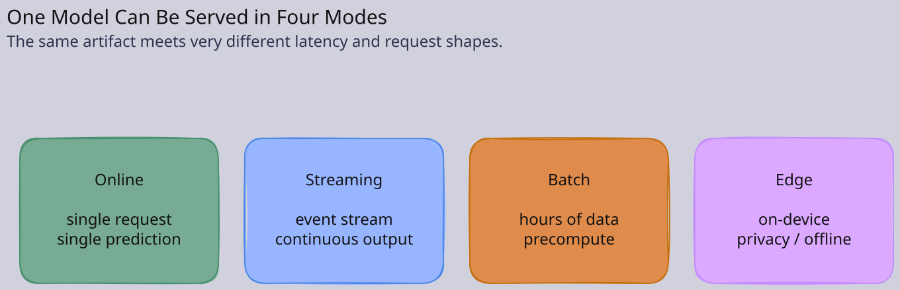
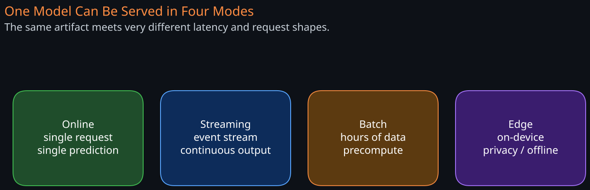
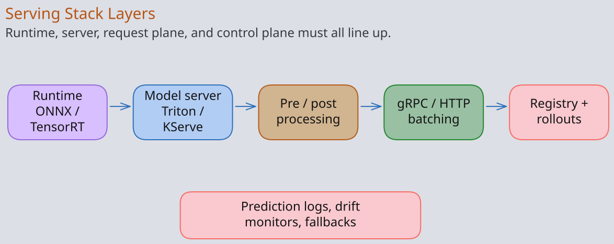
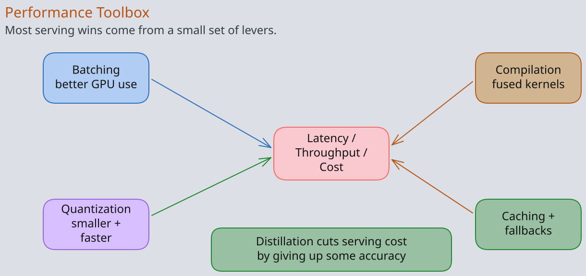
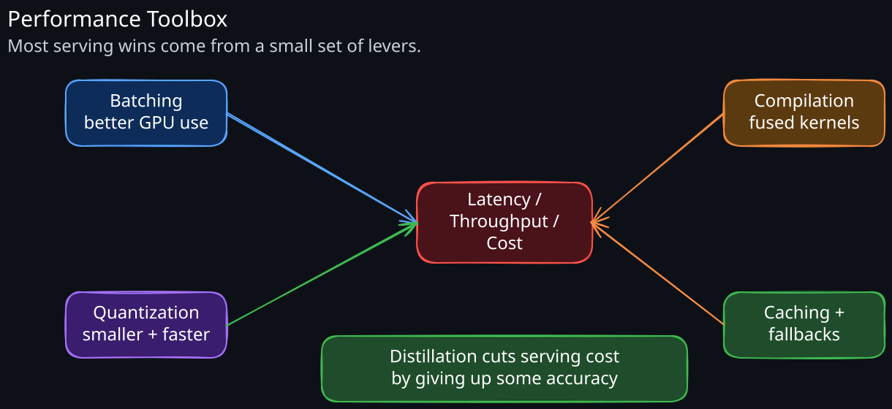

Model serving is the production runtime for ML: it takes a trained model artifact, wraps it in a network service, and answers prediction requests at the latency, throughput, cost, and reliability the business needs. The discipline is closer to high-performance systems engineering than to machine learning. A trained model that cannot be served reliably is a research artifact, not a product. See ML-System-Design-Fundamentals for the broader ML system context.
1. Serving Modes


The first architectural decision: when is inference run, and what is the request shape?
1.1 Online (Synchronous)
A single request gets a single prediction with tight latency targets (single-digit to low-tens of milliseconds at p99). Used in ad ranking, search ranking, fraud, content moderation, real-time recommendations.
1.2 Streaming
Predictions are produced from an event stream (Kafka, Kinesis) by a long-running worker (Flink, Spark Streaming) and written to a sink. No request-response; latency is measured from event ingestion to prediction availability.
1.3 Batch
A bulk job scores a large dataset, writes results to a warehouse, lake, or KV. Latency is minutes to hours. Used for nightly recommendations, propensity scoring, model retraining cycles.
1.4 Edge / On-Device
Inference runs on the user’s device. Model size, framework support (Core ML, TF Lite, ONNX Runtime Mobile, GGUF), and update mechanism matter most. Privacy and offline operation are the wins.
The same logical model often needs more than one serving mode (precompute embeddings in batch, score ranking online). The serving platform should support all three from one artifact.
2. Serving Stack Layers

A production model server has five layers, regardless of framework choice.
2.1 Model Runtime
The engine that loads the model and executes inference. Common choices:
- TensorRT (NVIDIA): heavily optimised for NVIDIA GPUs, kernel fusion, FP16/INT8 quantisation.
- ONNX Runtime: framework-agnostic, CPU and GPU, broad operator coverage.
- PyTorch (TorchScript / Compile): native runtime; flexible; less optimisation than TensorRT for dense networks.
- vLLM, TGI, TensorRT-LLM: LLM-specific; covered in LLM-Serving-Internals.
- XGBoost / LightGBM C++ runtimes: trees serve in microseconds on CPU; no GPU needed.
- CoreML / TFLite / GGUF: for edge.
2.2 Model Server
Wraps the runtime in a network service. Major options:
- NVIDIA Triton Inference Server: multi-model, multi-framework, batching, ensembles, GPU sharing. The most feature-complete general-purpose server.
- TensorFlow Serving: opinionated for TF SavedModel.
- TorchServe: PyTorch-focused.
- KServe (Kubernetes): control plane over many runtimes; declarative
InferenceServiceCRD. - Custom FastAPI / gRPC wrapper: common at small scale; becomes expensive in maintenance.
2.3 Pre/Post Processing
Tokenisation, feature lookup, normalisation, calibration, business rules. Often runs in the same process as the model for latency, but can be split into a dedicated service for sharing across models or scaling independently.
2.4 Request Plane
gRPC or HTTP, with batching, multiplexing, retries, deadlines, and a feature-store client. Most serving libraries expose both; gRPC is preferred internally for streaming and lower overhead.
2.5 Control Plane
Model registry, deployment orchestration, traffic routing for canaries and shadow tests, scaling, autoscaling on QPS or queue depth, secrets, observability.
3. The Performance Toolbox


Five techniques cover most of the speedup wins available.
3.1 Batching
Most inference hardware (GPUs especially) is throughput-oriented. Processing one input at a time leaves the device 80–95% idle. Strategies:
- Static batching: fixed batch size; latency-bounded by waiting for the batch to fill.
- Dynamic batching (server-side): the server collects incoming requests up to a max wait (e.g., 5 ms) or max batch size, then runs them together. Trades p99 latency for throughput. Triton and Ray Serve do this natively.
- Continuous batching (for autoregressive LLMs): requests join and leave the batch every token. See LLM-Serving-Internals.
A 32× batch on a GPU often delivers 10–25× throughput at modest latency cost. Worth tuning early.
3.2 Quantisation
Reduce precision from FP32 to FP16, BF16, INT8, or INT4.
- FP16 / BF16: usually a free 2× speedup on modern GPUs with negligible accuracy loss.
- INT8 (post-training quantisation): 2–4× faster, requires calibration set; small accuracy drop typical (<1%).
- INT4 / weight-only quant: aggressive; common for LLM weights; needs quantisation-aware training or smart algorithms (GPTQ, AWQ).
Quantisation also shrinks model size, which speeds cold starts and reduces RAM/VRAM footprint.
3.3 Compilation and Graph Optimisation
Tools like TensorRT, OpenVINO, and torch.compile fuse operators, choose optimal kernels, and eliminate Python overhead. Speedups vary (1.5–5×) but compilation can be slow (minutes); build it once during deployment, not at request time.
3.4 Distillation
Train a smaller “student” model to match the larger model’s outputs. Trades accuracy (often 1–5% drop) for 5–20× lower inference cost. Routinely used for moving from BERT-large to BERT-small or from a big LLM to a fine-tuned small model.
3.5 Caching
- Result cache: identical input → cached output. Trivial for deterministic models; effective when inputs repeat (popular queries, common requests).
- Embedding cache: cache embeddings of common inputs; reuse downstream.
- KV cache (LLMs only): see LLM-Serving-Internals.
4. Hardware
The hardware choice is a serving decision, not a research one.
4.1 CPU
Sufficient for trees, linear models, small DNNs, and many CV/NLP models with quantisation. Cheap, abundant, easy to autoscale. Default for most non-LLM, non-vision workloads.
4.2 GPU
Required for large neural networks, vision, transformers, generative models. NVIDIA dominates production (CUDA ecosystem). Memory is the binding constraint for LLMs; FLOPs for training.
4.3 Specialised Accelerators
TPUs (Google), Trainium / Inferentia (AWS), Gaudi (Intel), Groq, Cerebras. Better $/perf for specific workloads if the model and framework are supported. Lock-in risk.
4.4 Multi-Tenancy on GPUs
Sharing a GPU across models is essential for cost. Triton, MPS (Multi-Process Service), MIG (Multi-Instance GPU, on A100/H100), and KServe ModelMesh enable it. The risk is interference: one model’s batch starving another. Quotas and queueing matter.
5. Deployment, Versioning, and Promotion
A model in production is a tuple of (model_binary, feature_schema, preprocessing_code, postprocessing_code, model_config). All five must be versioned together.
5.1 Model Registry
The system of record: every trained model with metadata (training data lineage, metrics, hyperparameters, framework, artifact URI). MLflow, Vertex AI Model Registry, SageMaker Model Registry, Weights & Biases. The registry is the source of truth for “what is in production right now.”
5.2 Promotion Strategies
- Blue/green: stand up a parallel deployment; switch traffic atomically. Simple; rollback is immediate.
- Canary: 1–5% of traffic to the new version, monitor business + guardrail metrics, ramp.
- Shadow: 100% of traffic to both; only the old version’s response returns; new version is observed. Most signal, double cost.
- A/B / Interleaving: proper experiment with statistical analysis. Default for product-facing models. See ML-Experimentation-and-AB-Testing.
The promotion ladder is the same as for code, with two extra concerns:
- Models can degrade silently (drift) where code does not.
- Model rollback may need a rollback of features and upstream pipelines, not just the binary.
5.3 Feature Schema Compatibility
A model is bound to the feature schema it was trained with. The server must validate that the incoming feature vector matches at startup (fail-fast) rather than at request time (silent miscalibration). See Feature-Stores.
6. Reliability
Model servers fail in two new ways traditional services don’t.
6.1 Slow Failure (Drift, Bad Predictions)
The service is up, latency is fine, but predictions are wrong. The only defence is monitoring:
- Prediction distribution monitors.
- Per-segment business KPI monitors.
- Calibration monitors (predicted probability vs observed rate).
- Constraint checks (out-of-range outputs, NaN, schema violations).
Each alert must be tied to a remediation: rollback, fallback model, heuristic, kill switch.
6.2 Cold Starts and Loading
Loading a 30 GB LLM into VRAM takes tens of seconds. During a scale-up event, new replicas can’t accept traffic immediately. Mitigations:
- Warm pools (overprovision; expensive).
- Snapshot/restore of process state.
- Predictive autoscaling against known traffic patterns.
- Multi-model serving so the loading cost amortises.
6.3 Fallbacks
Every online model needs a fallback for when it fails or is too slow:
- Previous model version.
- Cached prediction.
- Static heuristic.
- Reject and let upstream handle it (degraded experience).
The fallback path must be tested as often as the primary; broken fallback paths discovered during an incident are a textbook outage.
7. Observability
Beyond service-level metrics (latency, error rate, QPS, saturation):
- Per-model and per-version metrics — necessary for canary and rollback decisions.
- Prediction logging — every request and prediction logged for offline analysis and label joining. Storage is non-trivial; sample if needed.
- Feature value distributions — drift detection on the live feature inputs.
- GPU utilisation, memory, batch size histograms — for capacity planning.
- Tail latency by request shape — large requests, rare features, and certain segments often dominate the tail.
The prediction log is the single most valuable artifact a serving platform produces. Without it, root-causing model regressions is impossible.
8. Common Anti-Patterns
- One Python process per model, one model per pod: simple, terrible utilisation. Fix with multi-model serving.
- No batching: leaving 90% of GPU on the floor. Turn on dynamic batching even at modest QPS.
- Synchronous feature fetch in the request path with no caching: feature store latency dominates; cache or precompute.
- Deploying via
git pushfrom a notebook: no reproducibility, no rollback. Use a registry. - No shadow stage: every promotion is a guess. Shadow runs are cheap signal.
- Quantising as an afterthought: doing it post-launch requires re-evaluating every metric. Bake it into training/eval from the start when latency or cost is critical.
- Coupling preprocessing to the model server: makes scaling and reuse hard. Factor out shared pre/postprocessing into a library or sidecar.
- Treating model serving as a regular microservice without ML-specific observability: drift goes undetected, business metrics regress slowly, no one notices until a quarter later.
Revision Summary
- Model serving is high-performance systems engineering: latency, throughput, cost, and reliability dominate over model architecture choices.
- Serving modes — online, streaming, batch, edge — each impose different constraints; one logical model often needs multiple modes.
- The serving stack has runtime, server, pre/post processing, request plane, and control plane layers. Triton, KServe, TF Serving, TorchServe, vLLM cover most needs.
- Five performance levers dominate: batching, quantisation, compilation, distillation, caching. Batching and quantisation are usually the largest wins.
- Hardware choice (CPU, GPU, accelerator) is a serving decision and depends on model and economics; GPU multi-tenancy is essential for cost.
- Deployment requires versioned
(model, schema, code, config)tuples in a registry, promoted via canary/shadow/A-B with fast rollback. - Reliability adds two ML-specific failure modes: silent drift and cold starts. Both need explicit monitoring and fallbacks.
- Observability beyond standard service metrics: prediction logs, drift monitors, per-version metrics, GPU utilisation, tail latency by segment.
- Anti-patterns to avoid: one model per pod, no batching, no shadow stage, deploying from notebooks, treating model serving as a generic microservice.
Deep Understanding Questions
- A model serves at p50 = 8 ms and p99 = 300 ms. Throughput is half what the load test predicted. What does this pattern suggest, and what would you change first?
- You’re asked to halve GPU spend on a transformer-based ranking model. Walk through the optimisation order you’d try and how you’d quantify each step’s benefit and risk.
- A canary at 5% shows business metrics flat but latency p99 worse by 15 ms. The team wants to ramp anyway because the new model is “cleaner.” How do you respond, and what data would change your answer?
- Explain why a model that performs identically on a held-out test set can serve significantly worse predictions in production, even with no feature drift.
- Your serving cluster autoscales on QPS. During a flash sale, p99 latency spikes for 8 minutes before stabilising. What’s likely happening and what scaling signal would have prevented it?
- A model rollback is requested at 2 AM. The current version’s feature schema differs from the previous version’s. What does a correct rollback look like, and what’s the minimum machinery to make it routine?
- You inherit a serving platform with 200 models, each in its own pod, with average GPU utilisation of 4%. Design the migration to multi-model serving — what risks must you control during the transition?
- The product wants on-device inference for privacy. The current cloud model is a 7B-parameter transformer at p99 = 200 ms. What is realistic, and what is the design conversation you’d have with the product team?